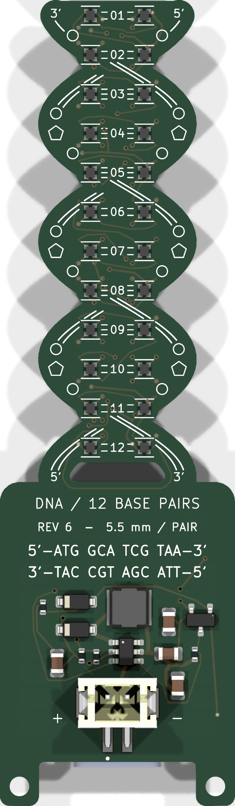
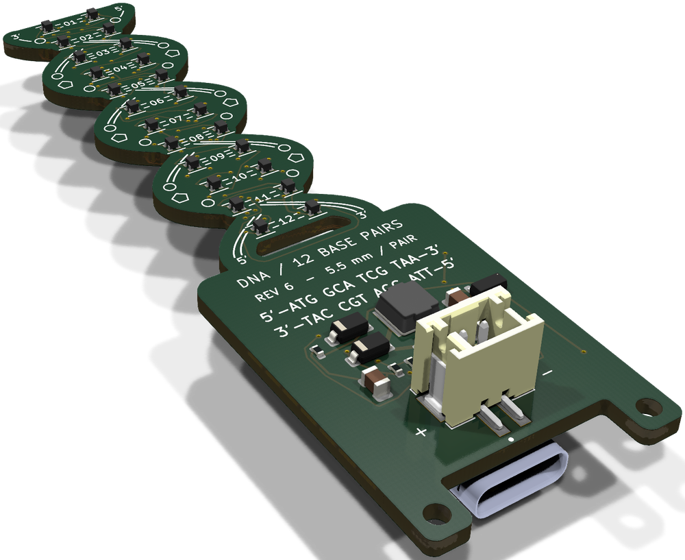
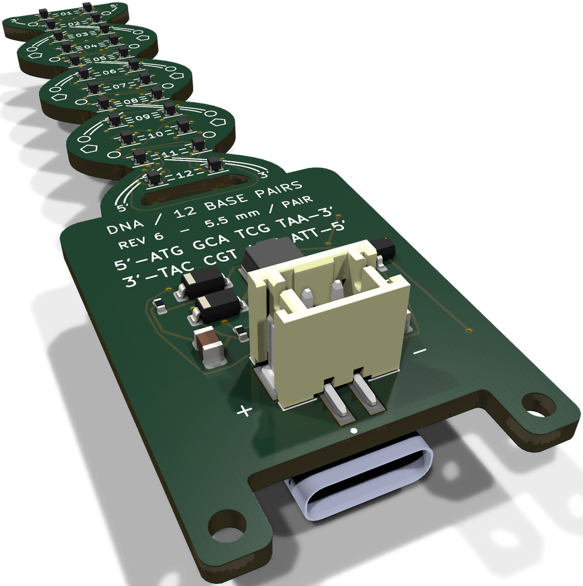
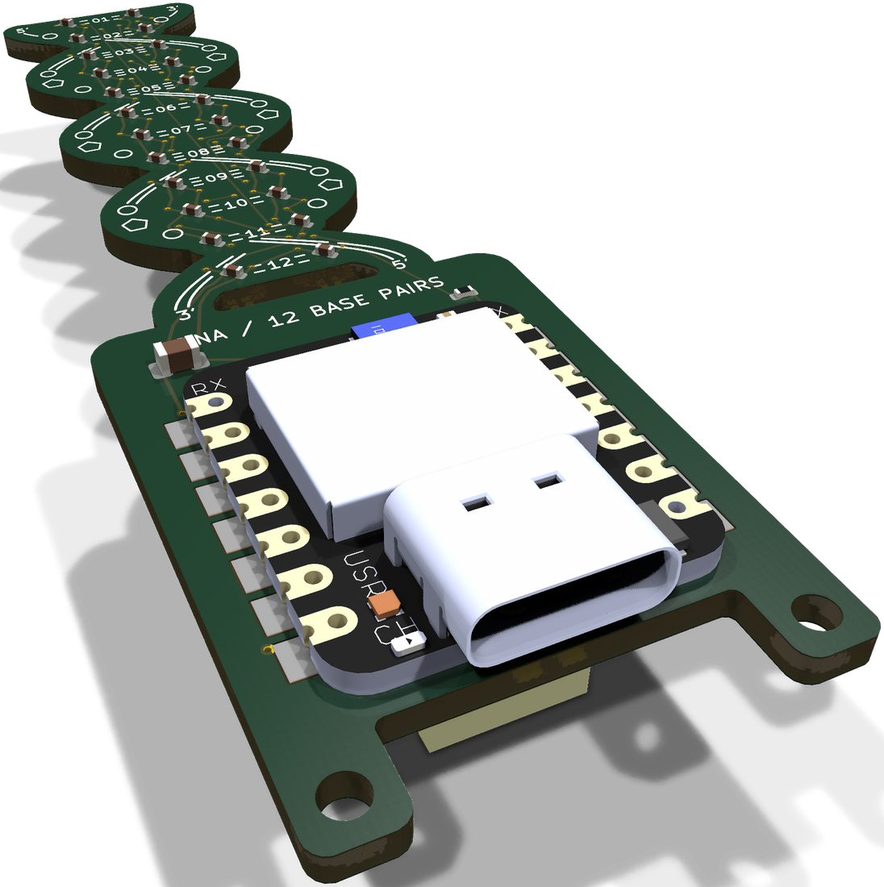
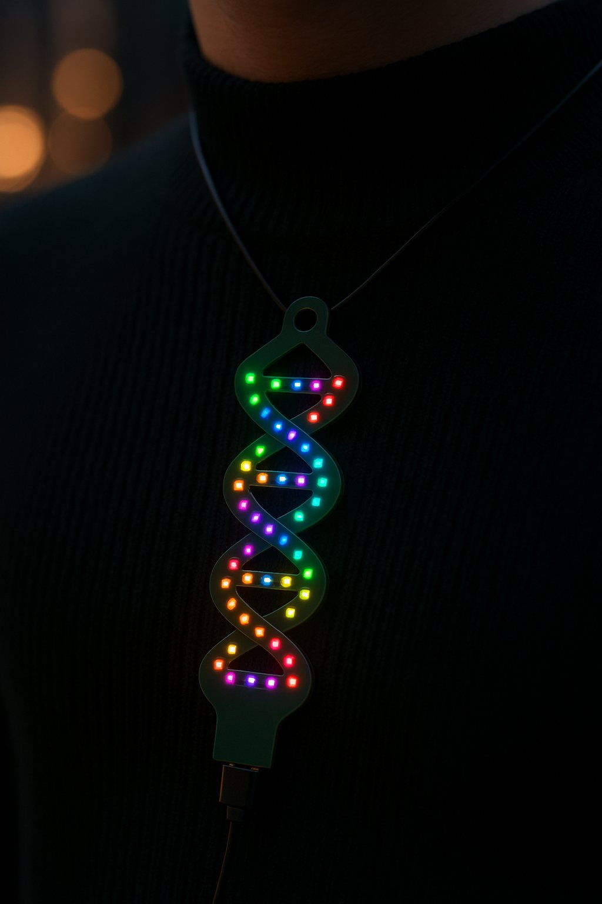
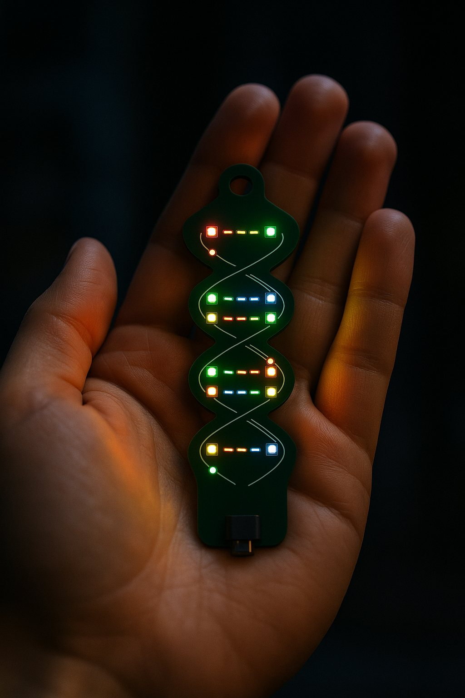

DNA LIGHT ACCESSORY ・ PROTOTYPE
塩基が光り、
言葉になる。
12 塩基対、24 個のフルカラー LED でできた DNA 二重らせんのアクセサリー。
A・T・G・C の並び「コドン」を光らせると、アミノ酸の一文字コードがメッセージとして読み取れます。

01 ／ CONCEPT
4 色の光が、1 文字を作る。
DNA は A・T・G・C の 4 種類の塩基の並びで情報を記録します。3 つ並んだ塩基＝コドンが、アミノ酸 1 種類を指定します。この仕組みをそのまま光に置き換えました。
塩基を 4 色で光らせる
1 つの塩基対は 2 個の LED。向かい合う LED は A↔T、G↔C の相補ペアで同時に光ります。
3 塩基で 1 コドン
3 つの塩基対（6 個の LED）が 1 つのコドン。ATG なら「M（メチオニン）」、読み始めの合図でもあります。
コドンを並べて文章に
基板には 4 コドン分の LED。最後に終止コドン（TAA・TAG・TGA）を置けば、そこで「文章の終わり」。
02 ／ GENETIC CODE
アルファベットは、遺伝暗号から。
20 種類のアミノ酸にはそれぞれ英字 1 文字が割り当てられています。たとえば L・I・F・E で「LIFE」。同じ文字でも複数のコドンがあるので、同じメッセージを別の光り方で表現できます。タップするとデモに追加されます。
使えない文字：B・J・O・U・X・Z（アミノ酸コードに存在しません）。標準遺伝暗号に基づく対応表です。
03 ／ TRY IT
4 文字までの言葉を、
DNAに書き込む。
英字を入力すると、対応するコドンと LED の色がその場で決まります。文字数が 4 に満たないときは、残りを終止コドンで埋めます。
各コドンの下段は相補鎖。基板上では向かい合う LED がその塩基で光ります。点灯はブラウザ上のシミュレーションです。
04 ／ HARDWARE DESIGN
らせんのかたちを、基板そのものに。
外形は 2 回転ぶんの二重らせん。LED・マイコン・コネクタまで 3D CAD で全部品を配置し、部品同士の干渉を確認しながら設計しています。シルクには糖・リン酸・水素結合・塩基対の番号を描き込みました。塩基の色は LED が決めるので、塩基の文字は印刷していません。吊り下げ穴は USB-C 側の左右の耳にあり、チェーンを通すと、らせんが下に垂れます。電池の電圧を 5 V に上げる昇圧回路と、USB／電池の自動切り替えも襟の表面に載せています（電池だけでも点灯。実機での確認はこれから）。



（WS2812B 系・個別に色指定）
＝ 4 コドン
吊り下げ穴 φ2 mm ×2（USB-C 側）
電池でも点灯（昇圧 5 V）
基板上のシルクは試作の初期配列 ATG GCA TCG TAA（M・A・S・STOP）。LED は 1 個ずつ色を指定できるため、光らせる配列はソフトウェアで変更できる設計です。
05 ／ IN YOUR LIFE
身につけて、持ち歩く。
首から下げるペンダントにも、バッグのファスナーに付けるチャームにも。細長いらせんの形は、胸元や持ち物の上でゆれながら、夜の街にやわらかな光を落とします。


※ 活用シーンの写真・動画は生成 AI による参考イメージです。LED の数や配置、基板の細部は実際の設計と異なります。実機の仕様は設計データ（上記 3D CAD）をご参照ください。